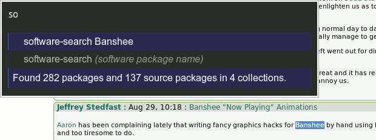

Searches software.openSUSE.org for software to quickly install on your Linux box.
In a nutshell, this allows you to search for any available software for Linux that has been built in the buildservice (including other distributions) or is available in the normal openSUSE distro. It works on selected text, or any string you type.
The command you should type is "software-search", but you should probably be able to get away with something as short as "so".
Note: You need Ubiquity installed.
